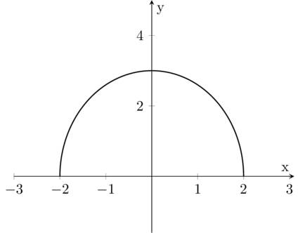

Limits and continuity of Vector-Valued Functions
Definition 3.2.1. Let I ⊆ ℝ and let l ∈ ℝn. And let r Vector-Valued Function; Given a point t0 ∈ I we say that
if
Since t ⟼ is a real value function we can utilyze the notion of limit already intorduced for real functions. Geometrically 3.2.1, means that the distance between the point r(t) and the point l in the space ℝn tends to zero for t ⟶ t0. Analitically this meas that for whatever sequence {tn} tending to t0 (with tn ≠ t0, ∀n), for every ε > 0, it results
|r(tn) − l| < ε 3.2.2
(that is for every n greater than a n0).
As we have seen in the examples to assign a Vector-Valued Function
r: ℝ ⟶ ℝn
is equivalent the n real functions
ri: ℝ ⟶ ℝ, i = 1, 2, ..., n
where
r(t) = (r1(t), r2(t), ..., rn(t))
The real functions ri are said components of the vector-function r.
We want to study the relation between, the limiti of a vector-valued Function and its components. Remember that the module of a vector v = (v1, v2, ..., vn) is defined by
so it is clear that
if |v| < ε, then |vi| < ε (for i = 1,2,..,n)
and the converse also holds true, i.e.
if for every i = 1,2,..,n results |vi| < ε, then |v| < ε√n.
As a consequnce if 3.2.1 holds it follows that
|ri(tn) − l| < ε 3.2.3
for for i = 1,2,..,n, and conversely if 3.2.3 holds for i = 1,2,..,n, then it results also
|r(tn) − l| < cost ⋅ ε 3.2.4
As a consequence we have that
The vector-valued Function r(t) tends to l, for t ⟶ t0, if and only if each of its component ri(t) tenso to the corresponding component li, of the limit vector. In other words, limits of vector-valued functions can be computed componentwise. In symbols
It follows that many properties and theorems of real functions hold true as well for vector-valued functions, namely
The unicity of the limit
The theorem of the limit of a sum or product by a constant.
The definition of continuous function at a point or in a set.
Regular Curves
3.2.2. Definition. Let I ⊆ ℝ. A function r: I ⟶ ℝn which is continuous (i.e. such that its components are continuos function) is said a continuous curve or arc. The curve is said closed if r(a) = r(b) with I = [a,b]. □
We think of the trace of the curve as the motion of a point and t.
Example 3.2.3.. The ellipse arc
is a non-closed continuous curve.
Increasing the value of the parameter, t reveal the orientation of a curve or the direction of motion along it. The curve above has counterclockwise orientation. A curve with equal trace but different orientation can be obtained by the following parametrization
Example 3.2.3.. The Folium of Descartes has cartesian equation
x3 + y3 = 3axy
To obtain the parametric equations we set y = xt. Then
It is clear that the loop is described as the parameter t varies from 0 to ∞ (because t = y /x = tan θ, where θ varies from 0 to π/2).
Example 3.2.4.. The equations
with a,b > 0, describe the iperbole branch
from here the origin of the name hyperbolic functions, for Ch t, Sh t. The other branch (for x < 0) is given by